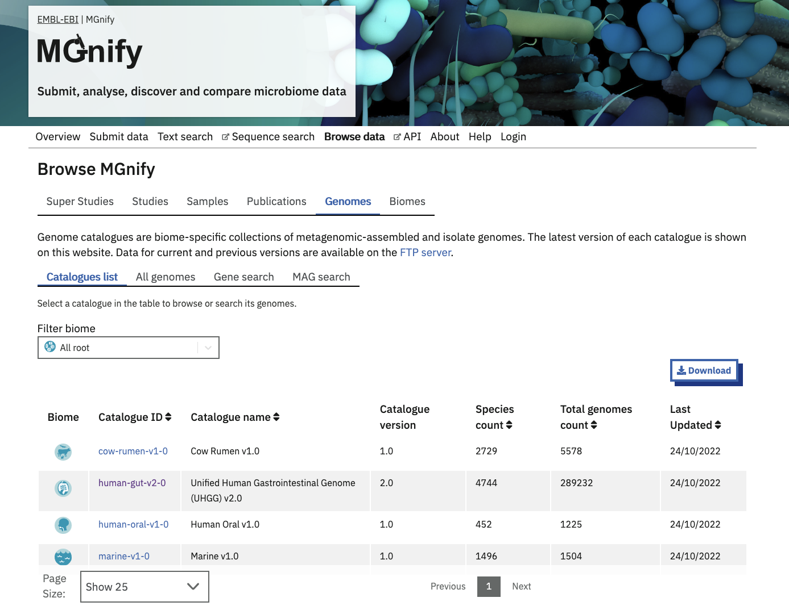
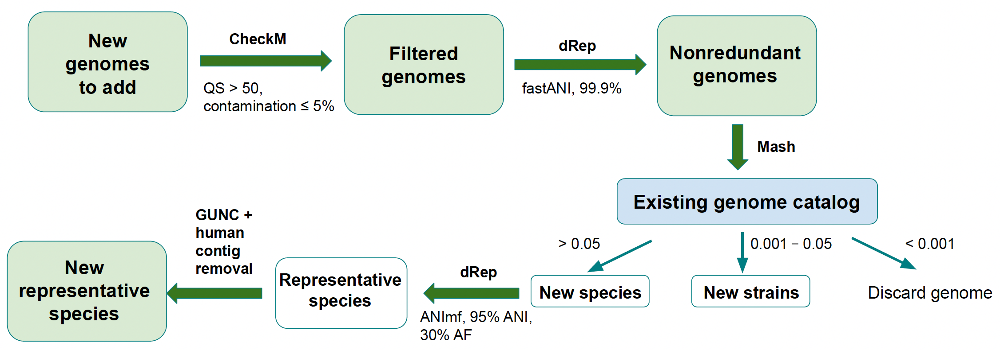
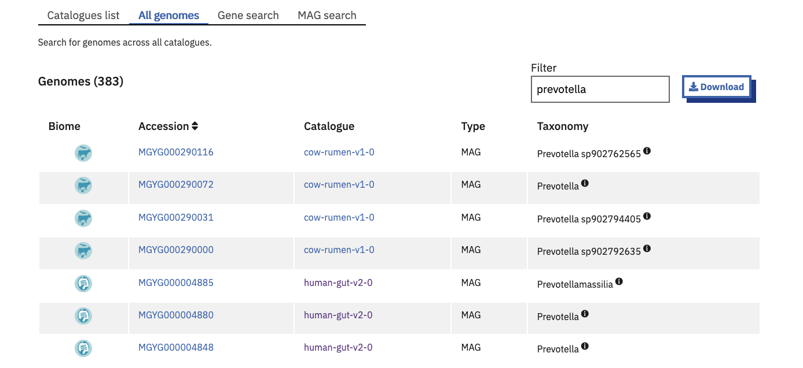
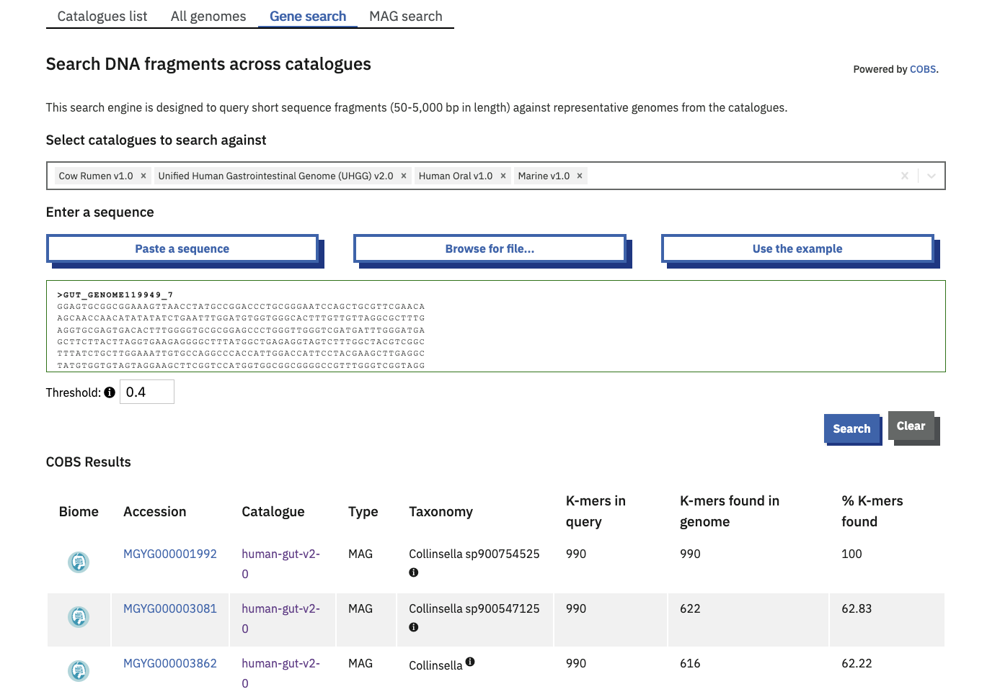
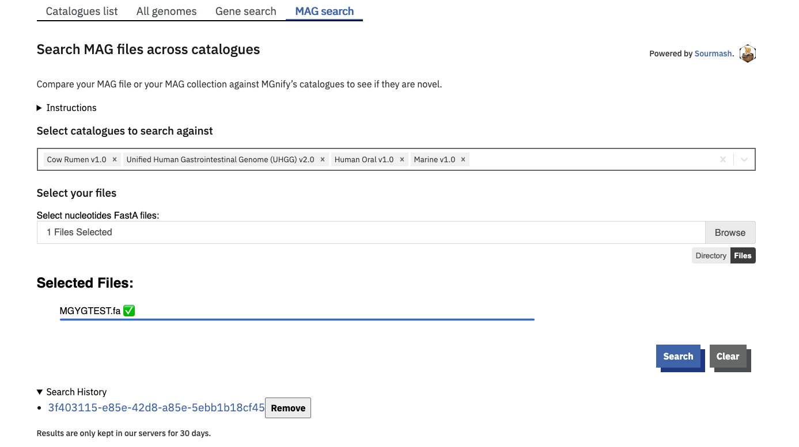
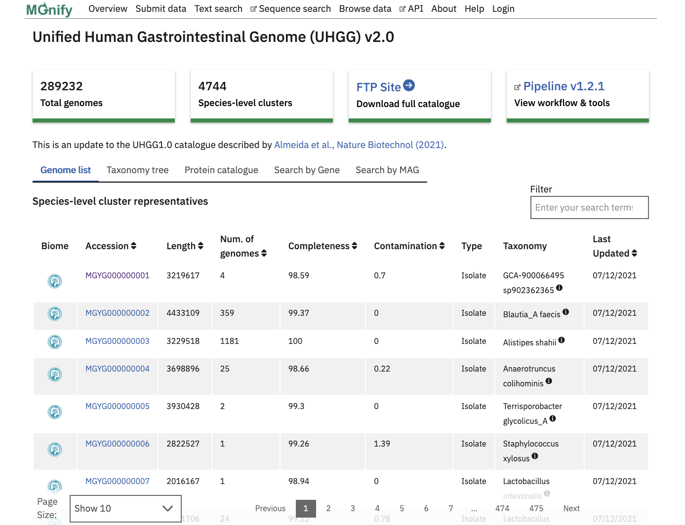
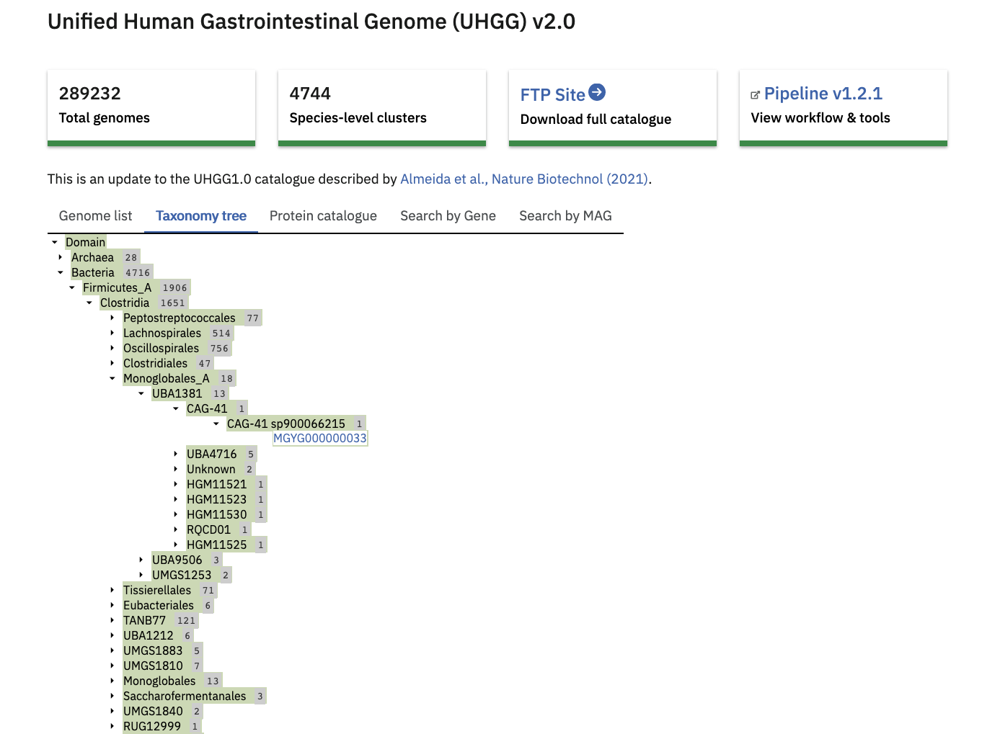
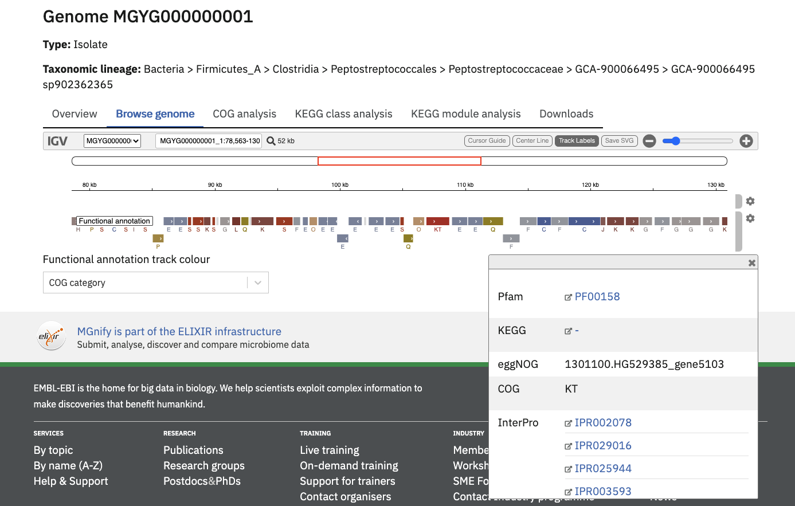
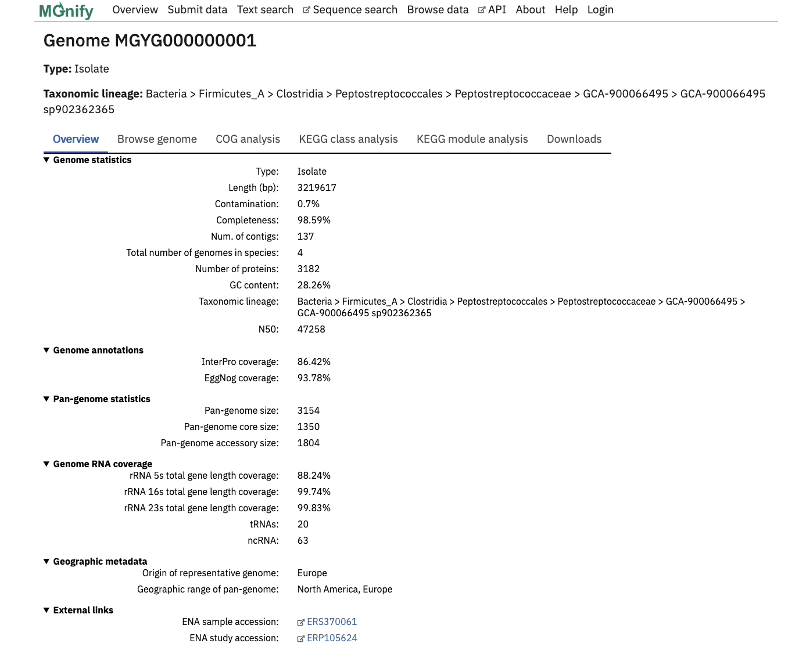

MGnify Genomes
Genome Catalogues
MGnify Genomes (accessed from the ‘Genomes’ tab of the ‘Browse data’ area in the menu bar) provides a detailed interactive view of prokaryotic genomes and their functional annotations.
MGnify displays genomes in biome-specific Catalogues.
The latest version of each Catalogue is shown on the website, whilst older versions can be downloaded from our FTP server.

Generating genome catalogues
There are two processes that have been put in place to generate a genome catalogue. A new catalogue (v1.0 of any catalogue) is generated using MGnify genome analysis pipeline. Pipeline structure and tool descriptions are included in the README file in the repository.
The process to produce updated versions of the catalogues is described below.
Updating an existing catalogue
New genomes (MAGs or isolates) are added to an existing catalogue following the steps outlined in Figure 2. To be added to a catalogue, a genome must be available in INSDC.

Briefly, the new genomes undergo QC filtration: quality score (QS) is calculated for each genome as % completeness - 5 \* % contamination; genomes with QS < 50 or contamination > 5% are removed. The genomes are then dereplicated at 99.9% similarity to remove strain redundancy and compared to the previous version of the genome catalogue using Mash to determine whether each genome represents a novel species, a novel strain or a strain that already exists in the catalogue. The category under which a new genome falls is based on the distance between the new genome and the most similar genome in the existing catalog: > 0.05 = new species, 0.001 - 0.05 = new strain, < 0.001 = strain already exists.
If the strain already exists, the genome is discarded. Genomes classified as novel species are dereplicated at 95% similarity to identify genomes that belong to the same species cluster and undergo two more quality control steps: genomes are screened with GUNC to remove possible chimeras and contigs are screened for human contamination using BLAST. Genomes that represent a novel strain become the new species representative for their respective cluster if any of the following conditions is true:
the new genome is an isolate while the current species representative is a MAG;
the new genome is a MAG and it’s quality score (
completeness - 5 \* contamination) is 10% higher than that of the current species representative;the new genome and the current representative are isolates and the quality score of the new genome is 10% higher than that of the current species representative.
If none of the above conditions is true, the new strain is added to the species cluster but does not replace the existing species representative.
The tools used to annotate the new genomes and to update the pan-genomes for each species containing multiple conspecific genomes to which new genomes have been added are listed in the README files associated with each catalog on the FTP server.
Searching across catalogues
There are three ways to search for species across all of the catalogues.
By accession or taxonomy

The Browse > Genomes > All Genomes tab lists genomes from all catalogues. The genome accessions and taxonomic lineages are indexed for full-text search. This is helpful to find a specific genome where the biome is irrelevant, or to find the set of biomes (catalogues) which a certain taxonomic classification is present in.
By gene fragment
The ‘Gene search’ tab is a COmpact Bitsliced Signature index (COBS) based search engine. COBS queries short sequence fragments against the species representatives of some or all genome catalogues.
One or more catalogues can be selected to search against. By default, your query is compared to all current catalogues.
The table of results provides the user with direct links to the matching genomes. Match statistics are shown as a count and percentage of kmers found. A score of 100% means that all of the 31-length kmers in the query were found in the indexed Genome.
The minimum kmer proportion is set at a default of 0.4 and can be increased or decreased within a range of 0.1-1 with the available toggle.

By whole genome / MAG
The ‘MAG search’ tab is a Sourmash based search engine. Sourmash queries complete MAGs for similarity against the species representatives of some or all genome catalogues.
One or more catalogues can be selected to search against. By default, your query is compared to all current catalogues.
The query genome must be a nucleotide sequence file.
Use the browse button to upload either a single FastA file, or multiple files by holding [ctrl] or [shift] while clicking in the file explorer. Alternatively you can select a whole directory of files using the directory mode (select this option below the Browse button). In this mode, the tool will process all FastA files in the selected directory, however it will not descend into subdirectories. Files are not uploaded onto MGnify servers. Rather, Sourmash generates a signature of your file(s) in your browser, and compares this signature against our MAG catalogue on the server. Successful searches create a CSV result file for each signature submitted. These are compiled into a TGZ allowing you to fetch all your results in one click. These result files are only stored in our servers for 30 days, so please be sure to download them before they expire.

Sourmash details
Specifically, the MAG search runs the sourmash gather command. In this mode, sourmash finds the minimum set of MAGs in the database that collectively contain as much of the query (meta)genome as possible. The “Best Match” MAG from each catalogue is the MAG that contains the largest content from the query (if any). To use this search programmatically (by submitting sourmash sketches of your own query MAGs to the MGnify API), the sourmash parameters must match those used by MGnify. MGnify use the default parameters for kmer size (-k 31) and sketch scaling (--scaled 1000).
See the “Search MGnify Genomes” notebook in MGnify’s notebooks repository for an example of how to query this API programmatically.
Browsing a catalogue
Clicking on a Catalogue ID in the list on the MGnify website allows you to browse the catalogue’s contents.
The “Genome list” tab contains a catalogue of non-redundant isolate and metagenome assembled genomes (MAGs). Each accession is a species representative of a cluster of genomes. To constitute a cluster: genomes with completeness greater than 50%, contamination less than 5% and average quality score (completeness - 5*contamination) greater than 50 - calculated with CheckM, v.1.0.11 are clustered with dRep v2.2.4 using an average nucleotide identity (ANI) cutoff of ≥95% and an aligned fraction (AF) of ≥30% . The species representative for each cluster is the best quality genome judged by completeness, contamination and the assembly N50 values. Isolate genomes are prioritised over MAGs for a species representative.

The ‘Taxonomy tree’ is a subset of the GTDB taxonomy which can be viewed interactively. Genomes from the catalogue can be found in the tree by taxonomic lineage. Each orange coloured genome accession links to further statistics and functional annotation data.

The ‘Protein catalogue’ is clusters of all the predicted coding sequences in the genome catalogue. Separate catalogues are generated at different amino acid identity levels (100%, 95%, 90% and 50%). Data for the Protein catalogue are available at the linked FTP server location.
Searching a catalogue
There are single-catalogue versions of the COBS and Sourmash searches available on the ‘Search by gene’ and ‘Search by MAG’ tabs, respectively. These searches work exactly the same as the cross-catalogue searches described above, except that they always search against only one catalogue.
Genome detail
View a specific Genome by clicking it in the Genome List, or a search result.
The page header details the genome type and a full GTDB lineage assigned with GTDB-tk. The ‘Overview’ tab contains statistics about the genome. Type of genome (isolate or MAG), length, percentage completeness and contamination, the number of contigs, number of genomes represented by the species cluster, total number of proteins, N50 and GC content are shown here.
Infernal is used to screen for the presence of ribosomal RNAs against Rfam covariance models for 5S, 16S and 23S rRNA. Transfer RNAs are identified with tRNAScan-SE. These figures are presented in the Genome RNA coverage section, as the percentage coverage for each rRNA type and a count of total tRNA and ncRNAs.
pCDS are inferred with Prokka which uses Prodigal . eggNOG-mapper tool assigns KEGG and COG annotations against the pCDS. InterProScan performs protein annotations with 5 member databases. The proportion of predicted proteins with an InterPro or eggNOG annotation are given as a coverage percentage. COG and KEGG annotations are visualised in their respective tabs with the top 10 hits in an interactive bar graph.
Additionally, the geographic origin of each genome, and links to ENA accessions can be found towards the bottom of this page.
The mobile genetic elements annotation is generated for representative genomes using the Mobilome Annotation Pipeline. It includes prediction of plasmids, viral sequences (including prophages), integrons, transposons, and insertion sequences. When detected, putative excision sites are reported as well. The final output is generated in GFF format and can be downloaded from the “Downloads” tab of each genome web page, or the FTP site. The location of mobile genetic elements in the contig can be visualized in the Genome annotation browser.
Genome annotation browser
All genome annotations can be viewed interactively in the ‘Browse genome’ tab to browse all assigned functional annotations in more detail.
The “Functional annotation track colour” dropdown menu can be used to pick an annotation type of interest. Once selected, the annotation region will be coloured (and labelled, depending on the annotation type).

Pan-genome
Genome accessions with more than 1 genome in a species cluster have additional pan-genome analyses. Roary v3.12.0 performs an iterative clustering of predicted genes with greater than 90% amino acid identity (AAI) for all genomes in the species cluster, to infer a core genome. Further BLASTp steps identify groups of homologous genes pertaining to the accessory genomes. The overview page has an extra ‘Pan-genome statistics’ block. Figures for pan-genome size - a ratio of the total core and accessory genes versus the total number of genes in the species representative, pan-genome core size and pan-genome accessory size can be found here. eggNOG-mapper tool and InterProScan annotations are performed as above. The COG and KEGG visualisations have an extra bar in the plot representing the pan-genome analysis.
The ‘Downloads’ tab comprises summary files for all described analyses.

A set of assemblies, annotations, pan-genome results and protein catalogues are available in our FTP server. Note that the GFF (.gff.gz) file for each cluster member genome on the FTP site includes both annotations in GFF tabular form, as well as the FASTA sequence of the genome at the end. The FASTA sequence can be obtained from the GFF file, for example with common unix tools: gunzip -c MGYG000290000.gff.gz | awk '/##FASTA/ {found=1; next} found' > MGYG000290000.fna
Citation
@online{2026,
author = {, MGnify},
title = {MGnify {Genomes}},
date = {2026-07-06},
url = {https://docs.mgnify.org/src/docs/mgnify-genomes.html},
langid = {en}
}